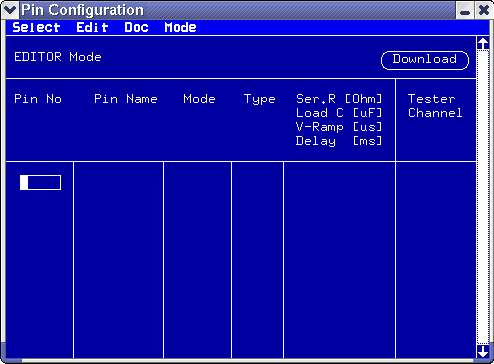
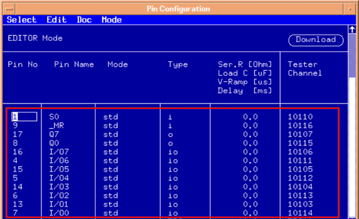
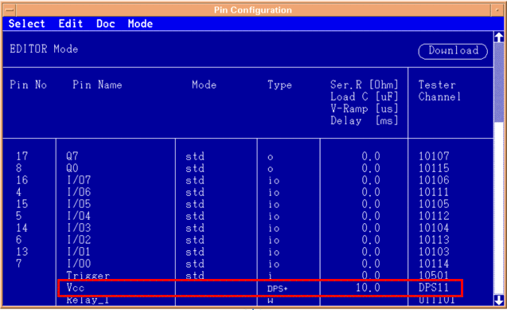
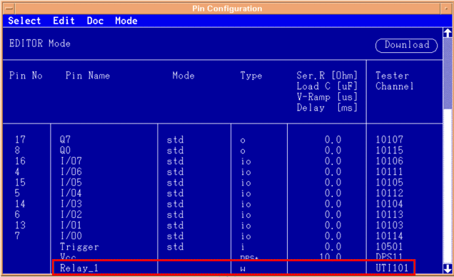

Create pin configuration
The Pin Configuration window is the first setup window that must be completed before you can test a new device. If the Pin Configuration details have not been entered, the software will not let you enter details about your device, in any other setup window.
- The Pin Configuration window must be switched to editor mode before you can edit data, or enter new data.
- Use the Pin Configuration window to tell the software about:
Your device:
- Pin No: The pin number (from the device package)
- Pin Name: A mnemonic name to indicate the pin's function
How to configure test system channels:
- Mode: The operating mode of the test system channel
- Type: The type of signal pin or power pin being tested (input, output, power polarity, etc...)
- Series Res: The value of a resistor wired into the signal path (on the DUT board)
- Load C: The value of the load capacitance connected to the DUT power pin (except LN-DPS type)
- V-Ramp: The value of the time from when the LN-DPS starts to output the voltage until the output voltage reaches the target value.
- Test System Channel: The ID number of the test system channel (IO channel or ChannelDPS channel) wired to the pin.
- Set up pin groups for easier handling of pins with related functionality
- Save your Pin Configuration setup in a file.
Now the pins are defined.
To enter the pin configuration you have to open the pin configuration editor:
- Click the Setup icon and choose Pin Config:
 Note Much of the information for the pin configuration can be imported from CAE data using translation tools, but the assignment to the tester channels must be made here.
Note Much of the information for the pin configuration can be imported from CAE data using translation tools, but the assignment to the tester channels must be made here. - In the Pin Configuration window, choose to enter the editor mode.

- If the "Context" box is displayed, enter the keyword DEFAULT.
When you have worked out the entries for the Tester Channel column your pin configuration editor screen should be looking almost complete. This is shown in the figure below.

- The syntax for DPS Tester Channel entry is
DPSmcwheremis the DPS module numbercis the DPS channel on that DPS moduleIf your setup requires a master/slave DPS configuration to increase the maximum current, the numbering of the slave channels has to follow sequentially from the number of the master channel. Enter the number of the master channel, followed by the number of the last slave channel.
A typical simple DPS entry is shown in the following figure:

- The utility lines are finally configured. This is shown in the figure below. where you enter
w for a write utility line and r for a read line
in the Type column.

- When all pins have been configured, click Download to load the configuration into the tester.
- Save the pin configuration.